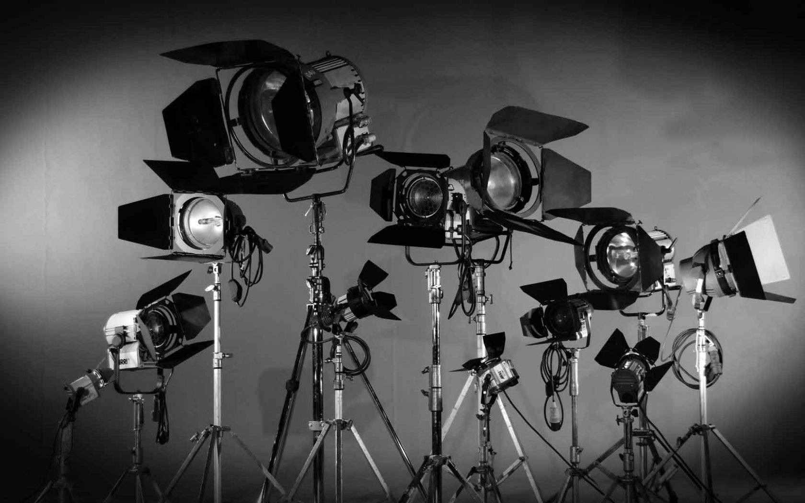
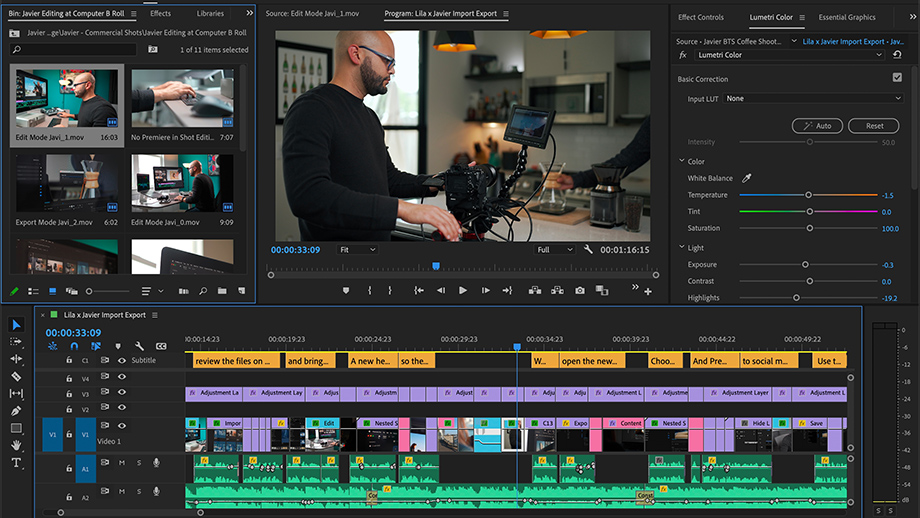
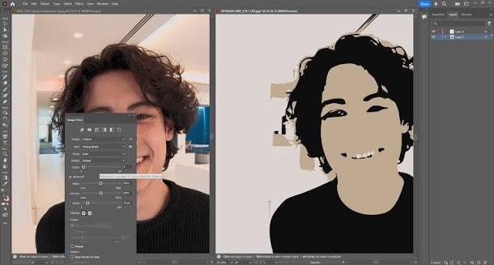
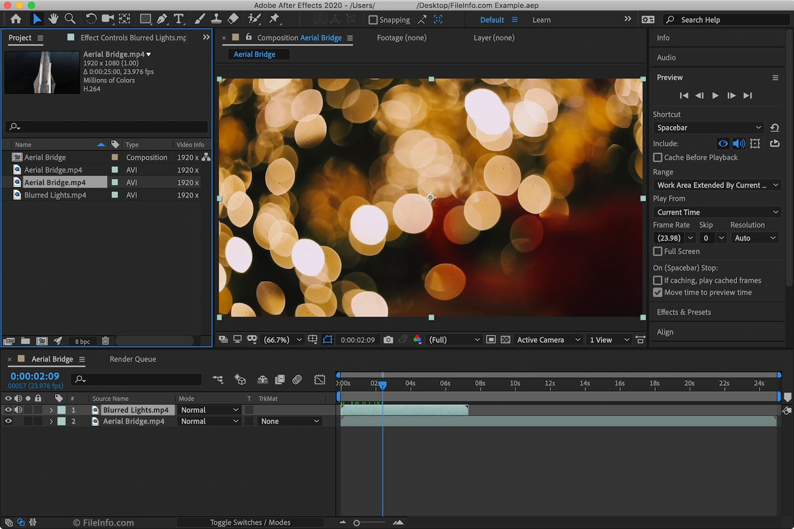
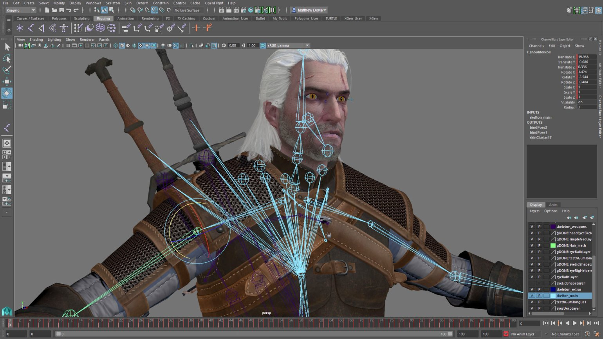
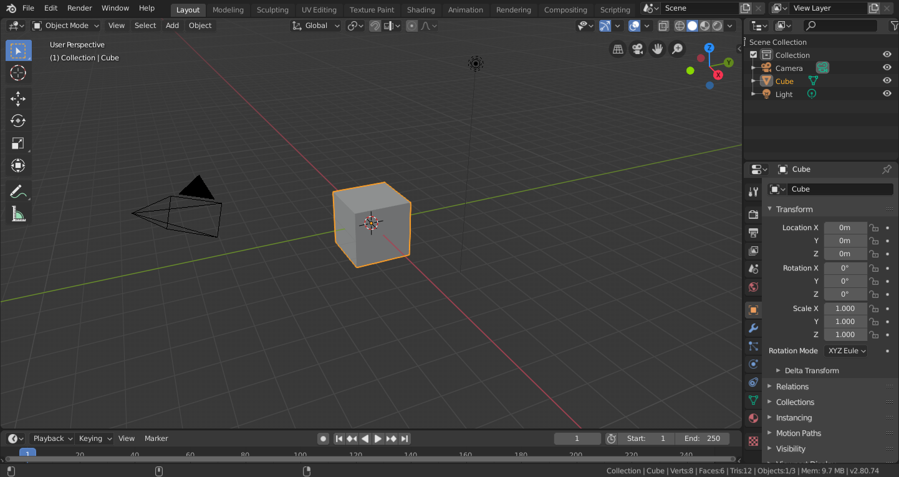
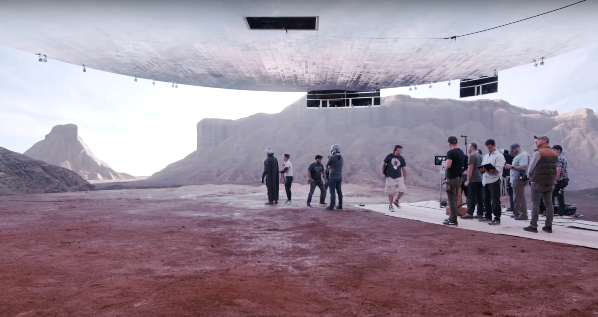
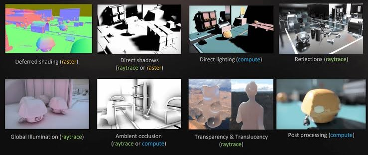

ИУ3-32М Дуданов Ю.В.
Переход от аналоговой обработке к цифровой
Популярное ПО для монтажа и обработки изображений
Наиболее используемые технологии и приемы в кинематографии
От идеи до кадра
Объединение видеоматериалов, обрезка, переходы
Изменение цветовой гаммы, устранение шумов
Объединение съемки с компьютерной графикой
Создание анимированных персонажей, объектов, фильмов
Построение и рендеринг сцен
Создание виртуальных декораций, интерактивных сцен и визуальных эффектов в реальном времени.





Совмещение виртуального пространства, компьютерных эффектов с реальной съемкой в реальном времени


| Формат | Сжатие | Качество | Основное применение |
|---|---|---|---|
| MP4 (H.264) | Высокое | Хорошее | Интернет, YouTube |
| MP4 (H.265) | Очень высокое | Высокое | 4K/8K, HDR |
| MOV (ProRes) | Низкое | Очень высокое | Монтаж кино |
| MXF (DNxHR) | Низкое | Очень высокое | ТВ и монтаж |
| RAW | Отсутствует | Максимальное | Цветокоррекция и VFX |
| AVI | Зависит | Зависит | Архивирование |
Программные средства создания и обработки видеоизображений играют важную роль в современном кинематографе и анимации. Развитие технологий рендеринга, виртуального производства и искусственного интеллекта расширяет творческие возможности и повышает эффективность кинопроизводства.
Таким образом, современные программные средства являются неотъемлемой частью киноиндустрии, объединяя технологии и творчество для создания реалистичных, выразительных и визуально сложных произведений.